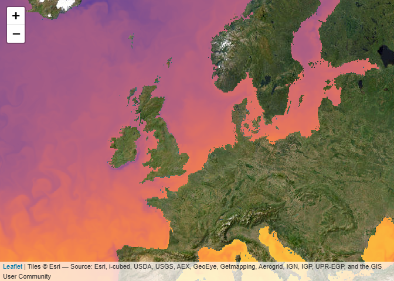

Overview
Copernicus Marine Service Information is a programme subsidised by the European Commission. Its mission is to provide free authoritative information on the oceans physical and biogeochemical state. The CopernicusMarine R package is developed apart from this programme and facilitates retrieval of information from https://data.marine.copernicus.eu. With the package you can:
- List available marine data for Copernicus and provide meta-information.
- Download and use the data directly in R.
Why use CopernicusMarine
Copernicus Marine offers access to their data services through a Python application interface. For R users this requires complex installation procedures and is difficult to maintain in a stable R package. The CopernicusMarine R package has a much simpler installation procedure (see below) and does not depend on third party software, other than packages available from CRAN.
Installation
Install CRAN release:
install.packages("CopernicusMarine")Install latest developmental version from R-Universe:
install.packages("CopernicusMarine", repos = c('https://pepijn-devries.r-universe.dev', 'https://cloud.r-project.org'))Usage
The package provides an interface between R and the Copernicus Marine services. Note that for some of these services you need an account and have to comply with specific terms. The usage section briefly shows three different ways of obtaining data from Copernicus:
Please check the manual for complete documentation of the package.
Downloading a subset
The example below demonstrates how to subset a specific layer for a specific product. The subset is constrained by the region, timerange and verticalrange arguments. The subset is downloaded to memory represented as a stars object.
my_data <-
cms_download_subset(
product = "GLOBAL_ANALYSISFORECAST_PHY_001_024",
layer = "cmems_mod_glo_phy-cur_anfc_0.083deg_P1D-m",
variable = c("uo", "vo"),
region = c(-1, 50, 10, 55),
timerange = c("2025-01-01", "2025-01-02"),
verticalrange = c(0, -2),
progress = FALSE
)
plot(my_data["vo"], col = hcl.colors(100), axes = TRUE)
Downloading a complete Copernicus marine product
If you don’t want to subset the data and want the complete set, you can download complete native files, if these are available for your product. You can list available files with (restricted to first 10 results with max=10):
native_files <-
cms_list_native_files(
"GLOBAL_ANALYSISFORECAST_PHY_001_024",
"cmems_mod_glo_phy-cur_anfc_0.083deg_P1D-m",
max = 10)
native_files
#> # A tibble: 10 × 9
#> Key LastModified ETag Size Owner_ID Owner_DisplayName StorageClass Bucket
#> <chr> <chr> <chr> <chr> <chr> <chr> <chr> <chr>
#> 1 nati… 2024-04-18T… "\"4… 1939… b8c2197… cloud_38953_ext_… STANDARD mdl-n…
#> 2 nati… 2024-04-18T… "\"9… 1939… b8c2197… cloud_38953_ext_… STANDARD mdl-n…
#> 3 nati… 2024-04-18T… "\"9… 1939… b8c2197… cloud_38953_ext_… STANDARD mdl-n…
#> 4 nati… 2024-04-18T… "\"c… 1939… b8c2197… cloud_38953_ext_… STANDARD mdl-n…
#> 5 nati… 2024-04-18T… "\"2… 1938… b8c2197… cloud_38953_ext_… STANDARD mdl-n…
#> 6 nati… 2024-04-18T… "\"0… 1938… b8c2197… cloud_38953_ext_… STANDARD mdl-n…
#> 7 nati… 2024-04-18T… "\"5… 1939… b8c2197… cloud_38953_ext_… STANDARD mdl-n…
#> 8 nati… 2024-04-18T… "\"5… 1939… b8c2197… cloud_38953_ext_… STANDARD mdl-n…
#> 9 nati… 2024-04-18T… "\"9… 1939… b8c2197… cloud_38953_ext_… STANDARD mdl-n…
#> 10 nati… 2024-04-18T… "\"1… 1939… b8c2197… cloud_38953_ext_… STANDARD mdl-n…
#> # ℹ 1 more variable: base_url <chr>Downloading a specific (or multiple file) can be done with:
cms_download_native(
destination = tempdir(),
product = "GLOBAL_ANALYSISFORECAST_PHY_001_024",
layer = "cmems_mod_glo_phy_anfc_0.083deg_PT1H-m",
prefix = "2022/06/",
pattern = "m_20220630"
)The file, whose file name matches the pattern, will be stored in the specified destination folder. By default the progress is printed as files can be very large and may take some time to download.
Copernicus Web Map Tile Services (WMTS)
Web Map Tile Services (WMTS) allow to quickly plot pre-rendered images onto a map. This may not be useful when you need the data for analyses but is handy for quick visualisations, inspection or presentation of data. In R it is very easy to add WMTS layers to an interactive map using leaflet. This page is rendered statically and resulting in a non-interactive map.
leaflet::leaflet() |>
leaflet::setView(lng = 3, lat = 54, zoom = 4) |>
leaflet::addProviderTiles("Esri.WorldImagery") |>
addCmsWMTSTiles(
product = "GLOBAL_ANALYSISFORECAST_PHY_001_024",
layer = "cmems_mod_glo_phy-thetao_anfc_0.083deg_P1D-m",
variable = "thetao"
)
Citing the data you use
A Copernicus account comes with several terms of use. One of these is that you properly cite the data you use in publications. In fact, we also have credit the data used in this documentation, which can be easily done with the following code:
cms_cite_product("GLOBAL_ANALYSISFORECAST_PHY_001_024")$doi
#> [1] "E.U. Copernicus Marine Service Information; Global Ocean Physics Analysis and Forecast - GLOBAL_ANALYSISFORECAST_PHY_001_024 (2016-10-14). DOI:10.48670/moi-00016"Code of Conduct
Please note that the CopernicusMarine project is released with a Contributor Code of Conduct. By contributing to this project, you agree to abide by its terms.